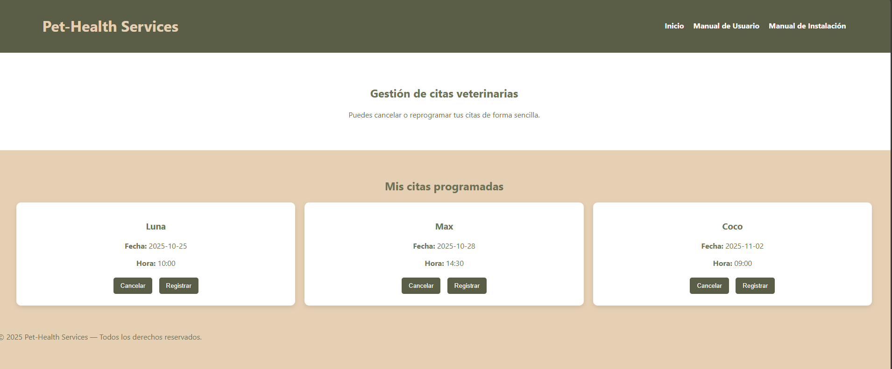
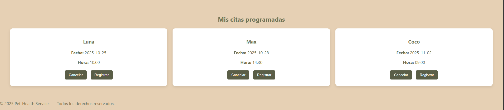
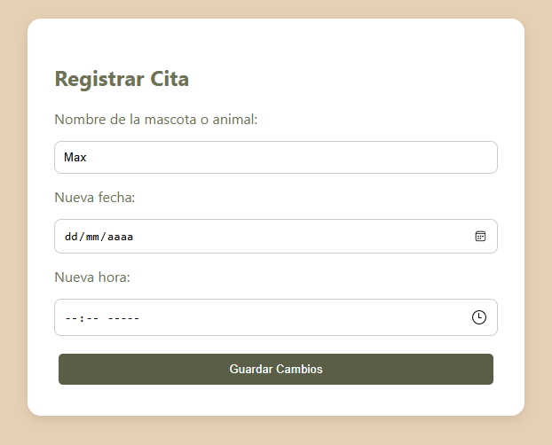
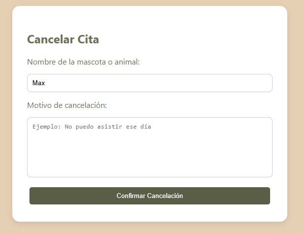

Pet-Health Services - Aplicativo Web Para el Cuidado de Animales y Mascotas de Campo
Bienvenido al manual de usuario de Pet-Health Services, la aplicación web diseñada para simplificar la gestión de citas veterinarias para tus mascotas y animales de granja.
Pet-Health Services permite a los propietarios de animales programar, cancelar y reprogramar citas veterinarias de manera intuitiva, optimizando el tiempo tanto de los dueños como de los profesionales veterinarios.
Este manual está dirigido a:
Dueños de mascotas y animales que necesitan gestionar sus citas veterinarias.
Empleados de clínicas veterinarias que utilizan el sistema para gestionar citas.
Cualquier persona que necesite utilizar el sistema de gestión de citas veterinarias.
En este manual utilizamos las siguientes convenciones para facilitar la comprensión:
Indica nombres de botones, opciones de menú o elementos importantes de la interfaz.
Indica nombres de archivos, comandos o elementos técnicos.
[Nombre del Botón] - Representa elementos clickeables.
Proporciona información adicional relevante o consejos útiles.
Indica posibles problemas o acciones que requieren precaución especial.
Ofrece sugerencias prácticas para un uso más eficiente del sistema.
Sigue esta guía concisa para comenzar a usar Pet-Health Services rápidamente:
Abre tu navegador y navega a la dirección de Pet-Health Services.
Si es tu primera vez, la aplicación se abrirá automáticamente en la página principal.
En la página principal, podrás ver todas las citas programadas.

Haz clic en [Registrar Cita] y completa el formulario con los datos de tu mascota.
Revisa los datos y haz clic en [Guardar Cita] para confirmar.
Recibirás una confirmación visual cuando la cita se haya registrado correctamente.
La página principal muestra un resumen completo de tus citas veterinarias:
Visualiza todas las citas programadas con información detallada de cada una.
Botones para [Cancelar] y [Registrar] citas directamente.
Acceso rápido a todas las funcionalidades del sistema.

Llena todos los campos requeridos:
Haz clic en [Guardar Cita] para finalizar el proceso.
Puedes programar múltiples citas para la misma mascota en diferentes fechas.

Desde la página principal, localiza la cita que deseas cancelar.
Haz clic en el botón [Cancelar] correspondiente a la cita.
Confirma la cancelación en el diálogo de confirmación que aparecerá.
Una vez cancelada, la cita no se puede recuperar. Asegúrate antes de confirmar.

Causas posibles:
Solución:
Causas posibles:
Solución:
Causas posibles:
Solución:
Significa que hay campos obligatorios vacíos en el formulario.
Indica que la fecha seleccionada es anterior a la actual o la hora no es válida.
Aparece cuando intentas acceder a una cita que no existe o fue eliminada.
Sí, Pet-Health Services está diseñado para gestionar citas de todo tipo de mascotas y animales de granja.
En la versión frontend, los datos se almacenan localmente en tu navegador. En la versión con backend, se guardan en una base de datos segura.
Sí, la aplicación es completamente responsive y se adapta a diferentes tamaños de pantalla, incluyendo smartphones y tablets.
La aplicación se actualiza automáticamente. Si usas la versión local, se recomienda descargar las actualizaciones cuando estén disponibles.
En la versión local, los datos son específicos de cada navegador y usuario. En la versión con backend, se puede configurar acceso múltiple.
soporte@pethealthservices.com
Respuesta en 24-48 horas
+1-800-PET-CARE
Lunes a Viernes, 9:00 - 18:00
docs.pethealthservices.com
Manuales y tutoriales actualizados
Cuando contactes al soporte técnico, por favor incluye:
Este manual se actualiza regularmente. Visita nuestra página de documentación para acceder a la versión más reciente y tutoriales adicionales.